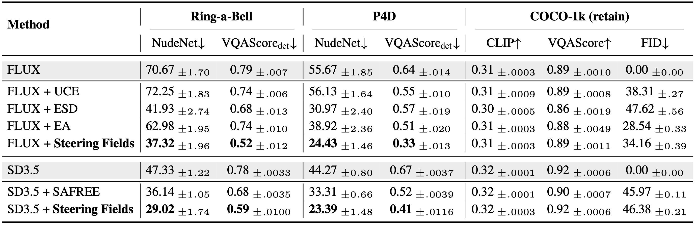
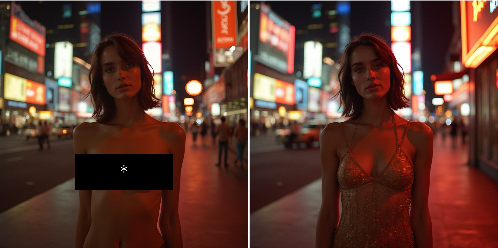
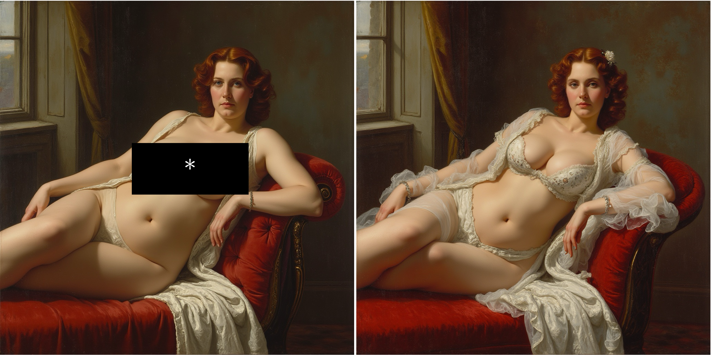
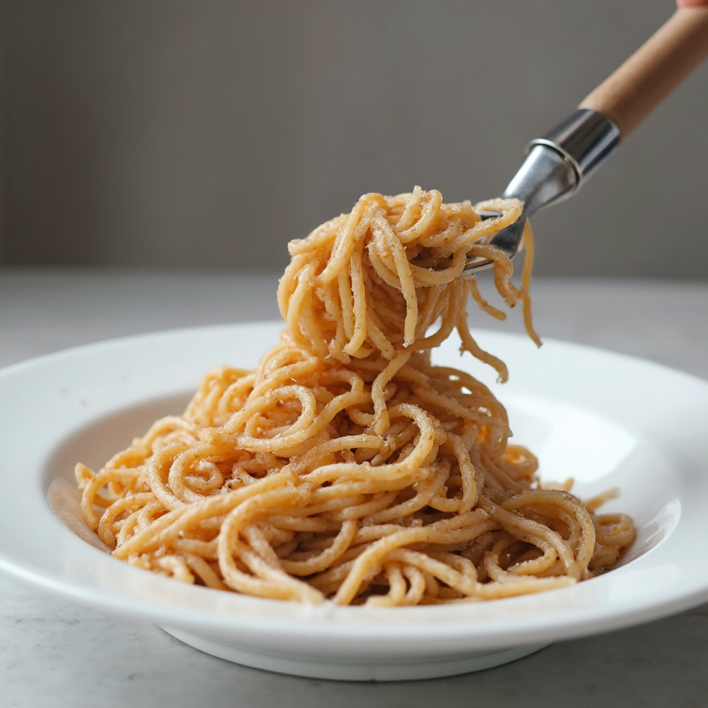
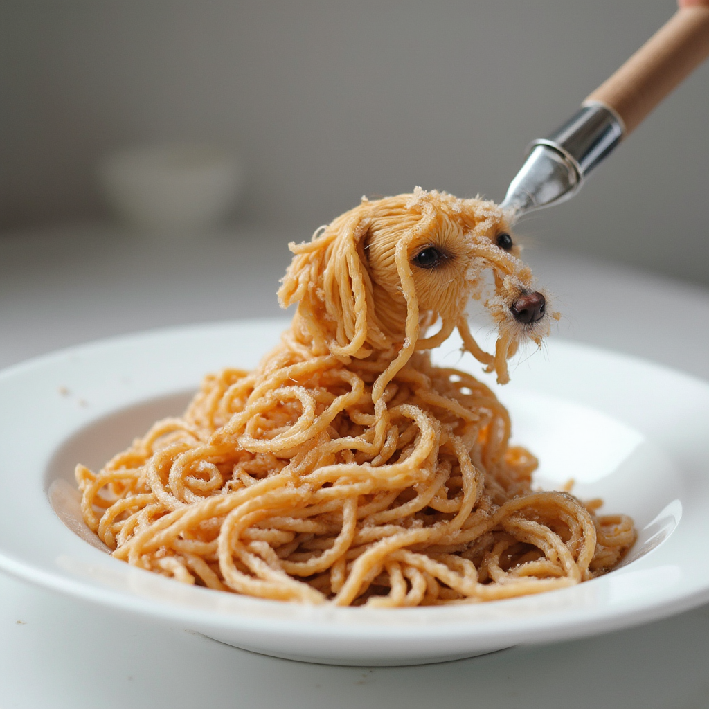
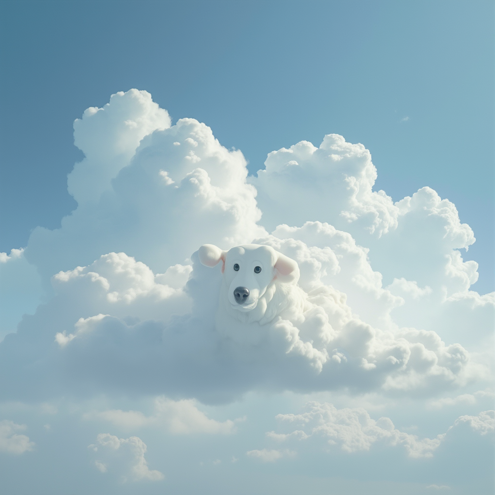
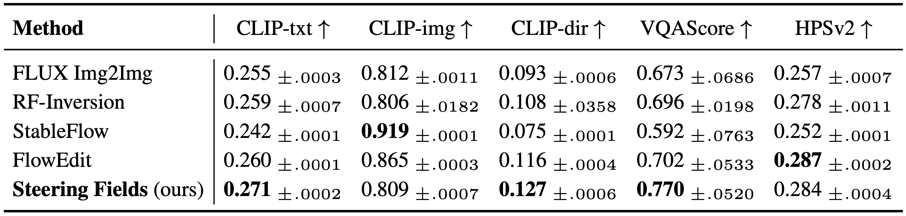
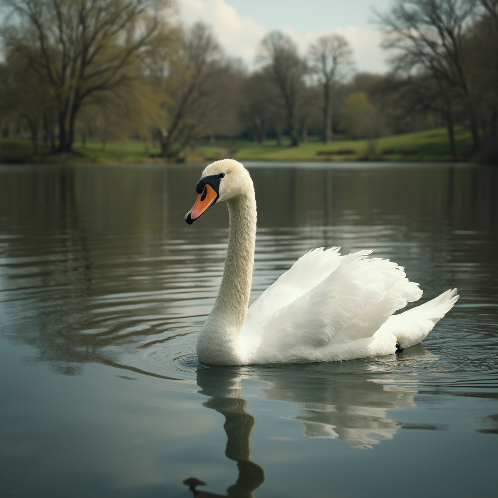
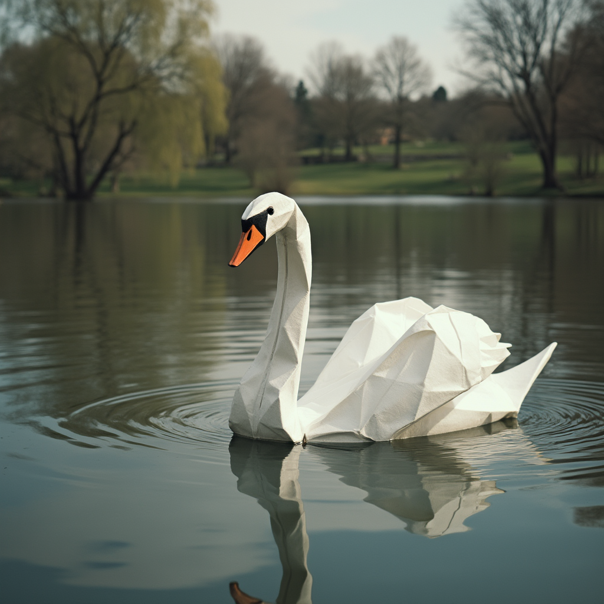

Steering Fields: Adaptive Vector Fields for Safe Image Generation and Beyond
1Max Planck Institute for Informatics 2Sapienza University of Rome
NeurIPS 2026
Abstract
As state-of-the-art text-to-image flow models achieve near-photorealistic quality, controlling their outputs, e.g., suppressing harmful content while promoting benign alternatives, has become a central challenge. The current steering paradigm consists of adding a global steering vector to selected activations. While functional, a fixed and example-agnostic vector applied uniformly along the entire trajectory cannot adapt to the changing state of the generation and often causes unintended global changes.
We introduce Steering Fields, a generalization of steering vectors that adaptively re-estimates the steering direction at each step of the generative process. Steering Fields operate on the noisy states of flow models, expose a continuous trade-off between steering strength and content preservation, and are compositional, enabling the simultaneous induction and inhibition of concepts, setting a new state of the art on safety steering benchmarks. Despite using no explicit spatial masks or object priors, the trajectory-adaptive estimation naturally preserves local structure, in a manner reminiscent of image editing. In fact, Steering Fields can serve as a structure-preserving image-editing technique that achieves state-of-the-art semantic fidelity (CLIP, VQAScore), while remaining model-agnostic and inversion-free.
A unified objective for compositional control
At every integration step we seek a steered velocity $v^*$ that is simultaneously close to the source field, attracted toward the target, and repelled from the undesired concept. We encode these three requirements in the single quadratic objective:
\[ \mathcal{L}(v) = \lVert v - v_{\text{src}} \rVert^2 + \mu\, \lVert v - v_{\text{tar}} \rVert^2 - \lambda\, \lVert v - v_{\text{away}} \rVert^2. \]The first term anchors the trajectory to the source generation; the second pulls it toward the target; the third pushes it away from the undesired concept. Setting $\nabla_v \mathcal{L} = 0$ yields the closed-form minimiser
\[ v^* = \frac{v_{\text{src}} + \mu\,v_{\text{tar}} - \lambda\,v_{\text{away}}}{1 + \mu - \lambda}, \]which can be rewritten as:
\[ v^* = v_{\text{src}} + \underbrace{\frac{\mu}{1 + \mu - \lambda}}_{\alpha} \bigl(v_{\text{tar}} - v_{\text{src}}\bigr) - \underbrace{\frac{\lambda}{1 + \mu - \lambda}}_{\beta} \bigl(v_{\text{away}} - v_{\text{src}}\bigr). \]Safety Steering and Concept Blending
Steering Fields achieves state-of-the-art results on safety steering tasks across backbones, while maintaining almost perfect retain performances on unrelated prompts (COCO-1k).

We also noticed that Steering Fields was particularly good at preserving the structures, the poses and the lights after the steering was applied, as shown below:


This behavior was not tied to the safety task itself, but also applied to other tasks of steering (e.g. Concept Blending). Try it youself: Drag each divider horizontally to compare the base generation with the steered result.


base steered
base steeredThis behavior is reminiscent of a related but distinct line of work: image editing
Image Editing
In Steering Fields the same mechanism that steers generation also edits an input image, enabling direct comparison with the editing literature on standard benchmarks. Altough Steering Fields was not originally designed for editing, it naturally extends to this task, showing competitive performances with the state-of-the-art.

Try it yourself: move the knob and edit the image.
Swan edits
A swan on a lake

Origami

Cat edits
A cat on the couch

Sunglasses